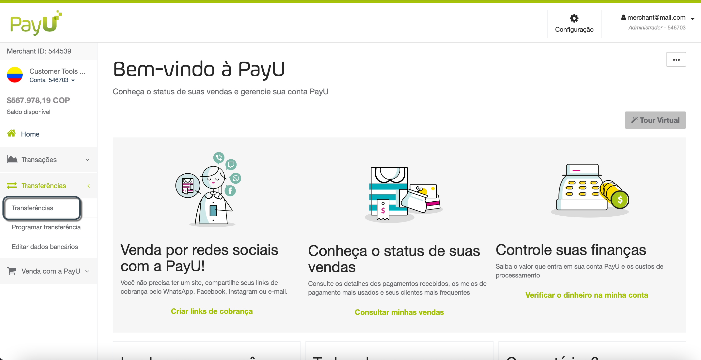
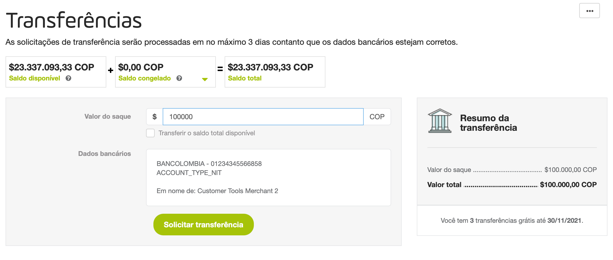
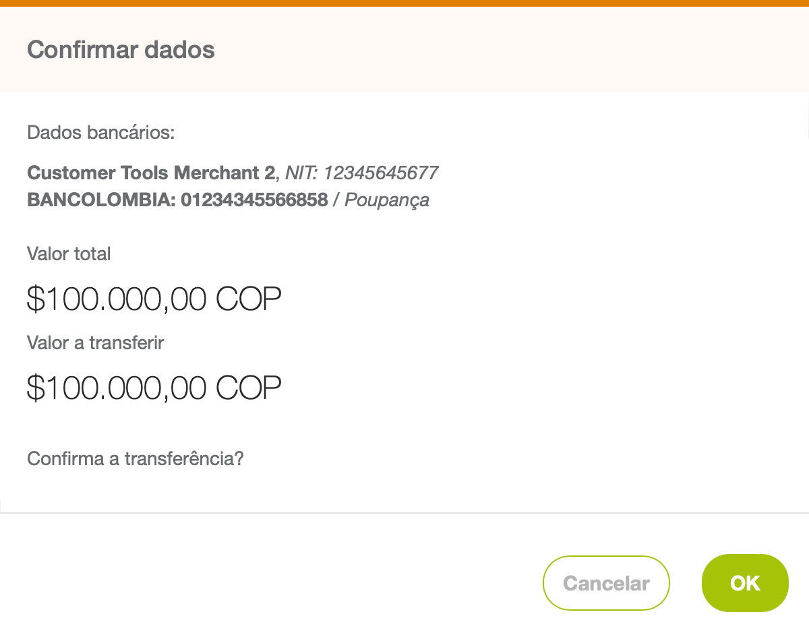
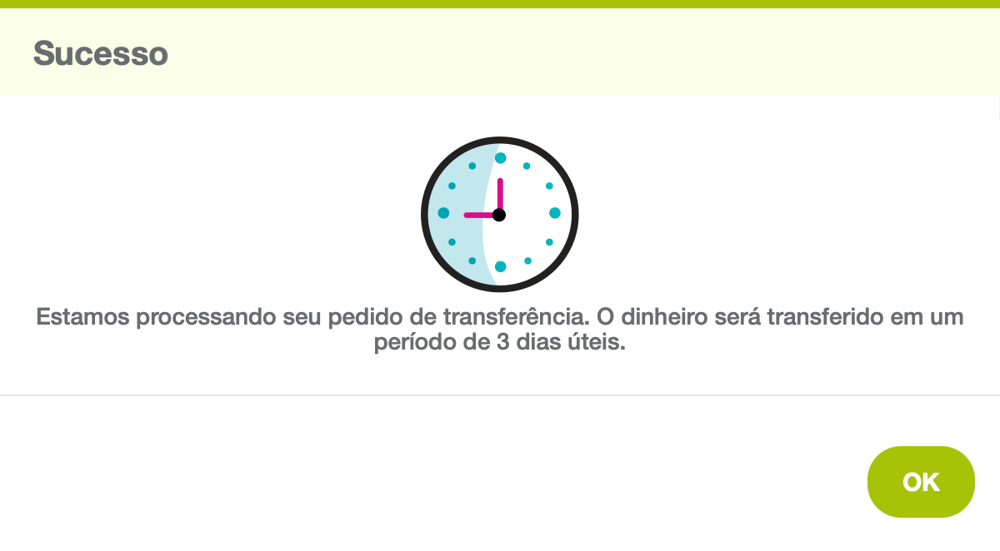
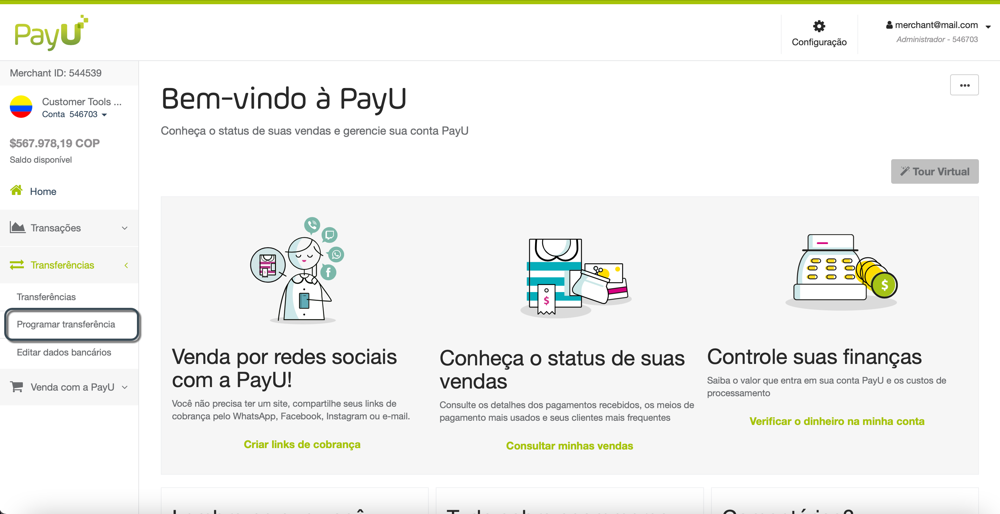
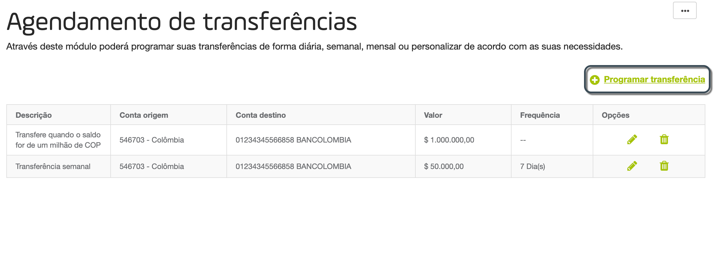
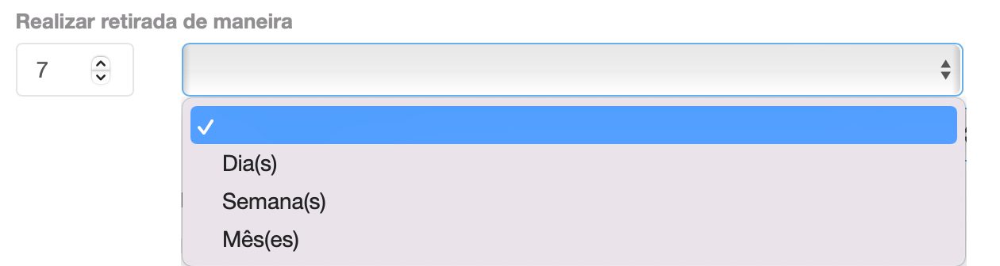
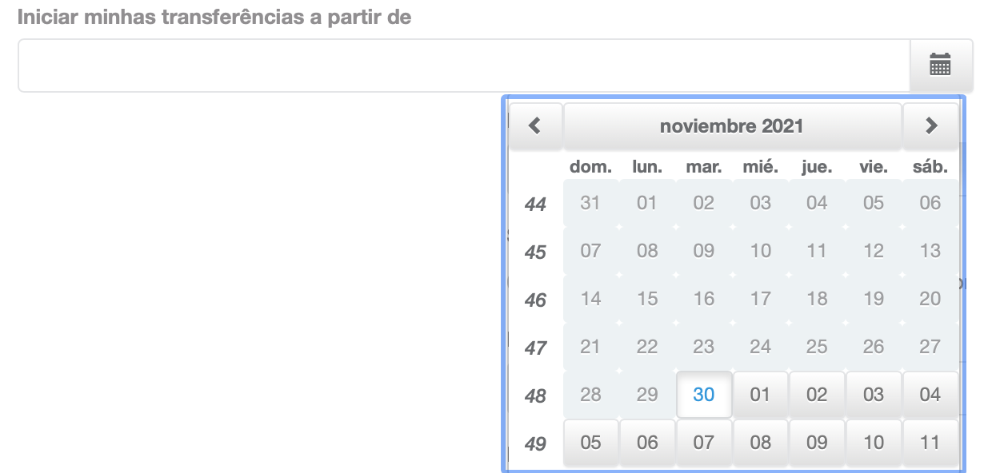

Transferências
No módulo Transferências, há opções para transferir os fundos arrecadados em sua conta virtual PayU para sua conta bancária principal cadastrada.
Observações
Lembre-se das seguintes considerações antes de transferir fundos para sua conta bancária.
- Você deve ter suas informações bancárias atualizadas e validadas. Lembre-se que se você solicitou a atualização de sua conta bancária, as transferências que você faz são enviadas para a conta bancária anterior até que nossa equipe de Risco a tenha validado.
- Como o PayU no Brasil não é uma instituição de pagamento, os fundos arrecadados em sua conta PayU são transferidos para sua conta diariamente gratuitamente. Para verificar o status dessas transferências, use a opção de Relatório de transferências (Transferências > Para conta bancária).
- As três primeiras transferências locais realizadas durante o primeiro mês são gratuitas. A partir da 4ª solicitação de transferência, PayU cobra os seguintes valores:
- Colômbia: COP 6.500,00 + IVA (Colômbia)
- Peru: PEN 10,00 + IGV (Peru),
- Argentina: ARS $ 10,00 + IVA (Argentina),
- Chile: CLP 0,00
- México: MXN 0,00
- A primeira transferência leva cinco (5) dias para ser depositada na conta bancária. A área de Risco do PayU exige um valor positivo das vendas na primeira transferência como processo administrativo.
- A segunda e as seguintes transferências levam no máximo três (3) dias úteis.
- As transferências podem ser programadas por Quantidade e por Data
Note
Os períodos e valores explicados aqui valem apenas para transferências locais (para o mesmo país de operação). Para transferências internacionais, entre em contato com seu representante de vendas.Permissão necessária
Para ter acesso a este módulo, você precisa ter um perfil com a seguinte permissão habilitada:
- Transferências > Consultar
- Transferências > Gerenciar
Com esta permissão você pode executar transferências.
Consulte Perfis e permissões para obter mais informações.
Transferir fundos
You can transfer up to the total amount in your PayU account to the registered bank. Follow these steps to perform a transfer.
- Faça login em sua conta PayU. No menu esquerdo, expanda o menu Transferências e selecione Transferências.

- Complete o valor para transferir ou selecione a opção Transferir o saldo total disponível. No painel direito, o valor inserido será atualizado. Este painel também mostra quantas transferências gratuitas você tem até o final do mês.
Se você não tem transações gratuitas, este painel também exibe o valor ou a transação junto com os impostos.

- Clique em Solicitar transferência. Uma janela de confirmação aparece para confirmar o valor a ser transferido, o valor a ser debitado de sua conta e a conta de destino.
Clique em OK para confirmar ou Cancelar para descartar.

- O resultado da operação aparecerá. Observe o número de dias para que o dinheiro chegue na conta de destino.

Assim que o pedido for enviado com sucesso, a transferência fica com status Em processo e você pode vê-lo na seção Relatório de transferências realizadas no final do módulo. Além disso, o valor solicitado será debitado de seu saldo.
Se as transferências não puderam ser processadas, este valor volta para sua conta e nenhuma taxa é cobrada por esta operação.
Agendar transferências
Você pode automatizar as transferências e solicitar um saque de um valor fixo ou periódico.
Observação
 Programar transferência não está disponível no Brasil.
Programar transferência não está disponível no Brasil.- Ao programar transferências, você deve ter fundos suficientes quando a transferência for executada.
Para agendar uma transferência, siga estas etapas.
- Faça login em sua conta PayU. No menu esquerdo, expanda o menu Transferências e selecione Programar transferência.

- O módulo Agendamento de transferências abrirá, Aqui você pode ver todas as transferências agendadas que você configurou. Clique em Programar transferência para configurar uma nova programação.

Opções
A coluna opções fornece as seguintes ações:
- Editar (
 ): permite que você altere a configuração da programação.
): permite que você altere a configuração da programação. - Excluir (
 ): permite que você desative a programação. Depois que a programação é removida, nenhuma transferência automática pode ser criada.
): permite que você desative a programação. Depois que a programação é removida, nenhuma transferência automática pode ser criada.
- Selecione como você deseja agendar a transferência.
-
Programar transferências por frequência
Esta opção permite que você transfira uma determinada quantia a cada período determinado (dias, semanas ou meses). Para agendar este tipo de transferência, selecione a opção Frequência. -
Programar transferências por saldo disponível
Esta opção permite que você transfira uma determinada quantia sempre que o saldo atingir um determinado valor. Para agendar este tipo de transferência, selecione a opção Saldo disponível.
Forneça as seguintes opções.
| Opção | Descrição |
|---|---|
| Realizar retirada de maneira | Selecione a frequência das transferências que deseja agendar. Esta opção está disponível para transferências programadas por frequência.  |
| Selecione o valor que deseja retirar | Selecione o valor que deseja transferir, que pode ser o saldo total disponível ou um valor fixo. |
| Insira o valor a retirar | Selecione o valor que deseja transferir. Este campo aparece quando você seleciona a opção Configurar valor. |
| Iniciar minhas transferências a partir de | Selecione a data de início da programação. Nesta data, está agendada a primeira transferência.  |
| Descrição | Forneça uma descrição significativa para sua transferência. |
- Quando terminar, clique em Programar transferência.